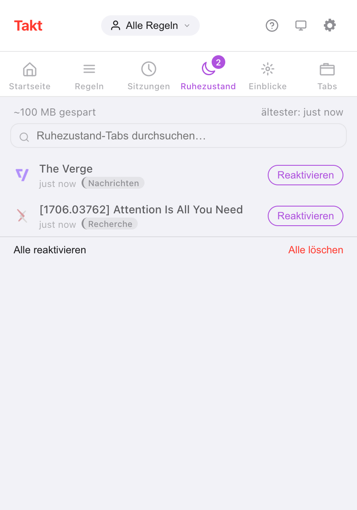

Kurz gesagt: Takt behandelt inaktive Tabs in zwei Stufen. Anhalten entlädt einen Tab, lässt ihn aber in der Tab-Leiste. Hibernieren schließt ihn und speichert seinen Zustand, sodass ein Klick ihn zurückbringt.
- Free: automatisches Anhalten nach 15 Minuten bis 4 Stunden Inaktivität, eine Liste nie anzuhaltender Tabs und manuelle Hibernierung von bis zu 5 Tabs.
- Premium: automatische Hibernierung nach Inaktivität, nach Tab-Anzahl pro Fenster oder am Ende eines Zeitplans, und bis zu 200 hibernierte Tabs.
- Alles bleibt auf Ihrem Gerät. Kein Konto, keine Analysen.
Was ist der Unterschied zwischen dem Anhalten und dem Hibernieren eines Tabs?
Beides gibt Arbeitsspeicher frei. Der Unterschied liegt darin, wo der Tab bleibt.
| Angehalten | Hiberniert | |
|---|---|---|
| Tab-Leiste | Bleibt, ausgegraut | Weg, aufgelistet im Bereich Ruhezustand von Takt |
| Wie | Chromes eigenes Verwerfen von Tabs (Discard) | Tab geschlossen, Zustand von Takt gespeichert |
| Zurückholen | Tab anklicken; die Seite lädt neu | Auf Reaktivieren klicken; der Tab öffnet sich wieder dort, wo er war |
| Manuell | Aussetz-Empfehlungen (Premium-Dashboard) | Kostenlos, bis zu 5 Tabs |
| Automatisch | Kostenlos | Premium |
Wie hiberniere ich einen Tab von Hand?
- Installieren Sie Takt aus dem Chrome Web Store.
- Öffnen Sie auf dem Tab, den Sie weglegen möchten, das Takt-Popup und klicken Sie auf Tab in Ruhezustand. Oder klicken Sie mit der rechten Maustaste auf die Seite und wählen Sie Diesen Tab hibernieren.
- Der Tab wird geschlossen, und Chrome zeigt kurz die Benachrichtigung „Tab hiberniert“.
- Um ihn zurückzuholen, öffnen Sie im Popup den Bereich Ruhezustand und klicken auf Reaktivieren.
Takt speichert URL, Titel, Favicon, Gruppenname und -farbe, Fenster, Position im Fenster, Anheftstatus, Scrollposition und den Zeitpunkt der Hibernierung. Reaktivieren öffnet den Tab in seinem Fenster, an seiner alten Position, zurück in seiner Gruppe, gescrollt dorthin, wo Sie waren.
Ist dieselbe URL bereits offen, fragt Takt vor dem Aufwecken nach, damit Sie kein Duplikat erhalten.

Die Angabe „~100 MB gespart“ ist eine pauschale Schätzung: Takt rechnet 50 MB pro hiberniertem Tab. Die geschlossenen Tabs misst es nicht.
Wie halte ich inaktive Tabs automatisch an?
Das automatische Anhalten ist kostenlos und standardmäßig aktiv. Alle 5 Minuten hält Takt Tabs an, die länger als Ihr Schwellenwert inaktiv waren: 15 Minuten, 30 Minuten (Standard), 1, 2 oder 4 Stunden. Einstellen lässt sich das unter Optionen → Settings → Tab Lifecycle.
Inaktiv bedeutet: Zeit, seit der Tab zuletzt aktiv war oder zuletzt fertig geladen hat. Nie angehalten werden:
- der aktive Tab und Tabs, die noch laden;
- Tabs, die Audio abspielen;
- angeheftete Tabs;
- Tabs, die auf Ihre Liste Never suspend these tabs passen.
Die Liste nimmt ein Muster pro Zeile auf, mit * als Platzhalter. *://mail.google.com/* hält Gmail geladen. Die Liste schützt Tabs auch vor allen automatischen Hibernierungs-Auslösern weiter unten.

Kann Chrome Tabs automatisch hibernieren? Premium
Mit Premium hat Takt drei Auslöser:
- Inaktivität. Ein Tab, der bereits angehalten und länger als Ihre Verzögerung inaktiv ist, wird hiberniert. Wählbar von 5 Minuten bis 7 Tage; Standard sind 2 Tage.
- Tab-Grenze. Überschreitet ein Fenster Ihre Grenze (15 bis 100 Tabs, Standard 30), hiberniert Takt dessen am längsten ungenutzte Tabs, bis die Grenze wieder eingehalten ist. Schließen Sie einen Tab, kehrt der zuletzt hibernierte in dieses Fenster zurück. Jedes Fenster wird einzeln gezählt.
- Zeitplan-Ende. Ein Profil-Zeitplan kann alle infrage kommenden Tabs hibernieren, wenn seine Zeit abläuft. Aktivieren Sie Hibernate tabs when schedule ends unter Profiles.
Bei den Auslösern Inaktivität und Tab-Grenze zeigt Chrome 10 Sekunden lang eine Benachrichtigung mit der Schaltfläche Undo. Danach wartet der Tab weiterhin im Bereich Ruhezustand.
Ist das ein neuer Great Suspender?
Berechtigte Frage. 2021 hat Google The Great Suspender entfernt, nachdem in einer Version, die nach dem Verkauf der Erweiterung erschien, Schadcode gefunden wurde. Danach haben viele Menschen Tab-Suspendern nicht mehr vertraut.
Das macht Takt anders, und das können Sie selbst prüfen:
- Angehaltene Tabs behalten ihre echte URL. Takt ruft Chromes eigene Discard-Funktion auf. Es ersetzt Ihre Seite nicht durch eine Erweiterungsseite, und wenn Sie Takt deinstallieren, bleiben Ihre Tabs, wie sie sind.
- Hibernierte Tabs bleiben auf Ihrem Gerät. Die Einträge liegen im lokalen Speicher von Chrome. Ihren Computer verlassen sie nur, wenn Sie selbst eine Drive- oder Ordner-Synchronisierung einrichten.
- Kein Konto, keine Analysen, keine Telemetrie. Zusätzliche Berechtigungen sind optional und werden erst angefragt, wenn eine Funktion sie braucht. Siehe wie Takt Daten lokal hält.
Jeder Erweiterung, die Sie installieren, müssen Sie trotzdem in Sachen Updates vertrauen. Lesen Sie, welche Berechtigungen sie anfordert.
Reicht Chromes „Memory Saver“?
Oft ja. Wenn Sie nur möchten, dass Hintergrund-Tabs keinen Arbeitsspeicher mehr belegen, kostet Chromes integrierter „Memory Saver“ nichts und braucht keine Erweiterung.
Zwei Beschwerden tauchen immer wieder auf: Tabs laden neu, wenn Sie zu ihnen zurückkehren, und manche inaktiven Tabs schlafen nie ein. Das Anhalten in Takt hat den ersten Nachteil ebenfalls. Ein angehaltener Tab lädt beim Anklicken neu, weil es dieselbe Art von Discard ist.
Was Takt hinzufügt, ist Kontrolle. Sie wählen den Inaktivitäts-Schwellenwert, Sie legen fest, welche Websites nie angerührt werden, und die Hibernierung nimmt Tabs ganz aus der Tab-Leiste, ohne den Weg zurück zu verbauen.
Wo liegen die Grenzen?
| Free | Premium | |
|---|---|---|
| Automatisches Anhalten und Liste nie anzuhaltender Tabs | Ja | Ja |
| Manuelle Hibernierung | Ja | Ja |
| Gleichzeitig hibernierte Tabs | 5 | 200 |
| Automatische Hibernierung nach Inaktivität, Tab-Grenze oder Zeitplan | Nein | Ja |
Angeheftete Tabs und Tabs, die Audio abspielen, lassen sich nicht hibernieren. Wenn Sie Ihre Grenze erreichen, hiberniert Takt keine weiteren, bis Sie einige aufwecken oder löschen.
Einen Tab schlafen legen. Ihn genau dort wieder aufwecken, wo Sie aufgehört haben.
Zu Chrome hinzufügen — kostenlosHäufige Fragen
Was ist der Unterschied zwischen dem Anhalten und dem Hibernieren eines Tabs?
Ein angehaltener Tab wird entladen, bleibt aber in der Tab-Leiste und lädt beim Anklicken neu. Ein hibernierter Tab wird geschlossen; Takt speichert seinen Zustand und öffnet ihn wieder, wenn Sie auf Reaktivieren klicken.
Wie viele Tabs kann ich kostenlos hibernieren?
Im kostenlosen Plan 5 gleichzeitig, mit Premium ($3/Monat oder $30/Jahr) 200. Das automatische Anhalten ist unbegrenzt und kostenlos.
Ist Takt ein neuer Great Suspender?
Takt hält Tabs mit Chromes eigenem Discard an, sodass sie ihre echte URL behalten. Hibernierte Tabs bleiben im lokalen Speicher auf Ihrem Gerät. Kein Konto, keine Analysen, keine Telemetrie.
Überstehen hibernierte Tabs einen Neustart des Browsers?
Ja. Sie liegen auf der Festplatte, nicht im Arbeitsspeicher. Beim Start verwirft Takt jeden Eintrag, dessen URL bereits wieder offen ist.